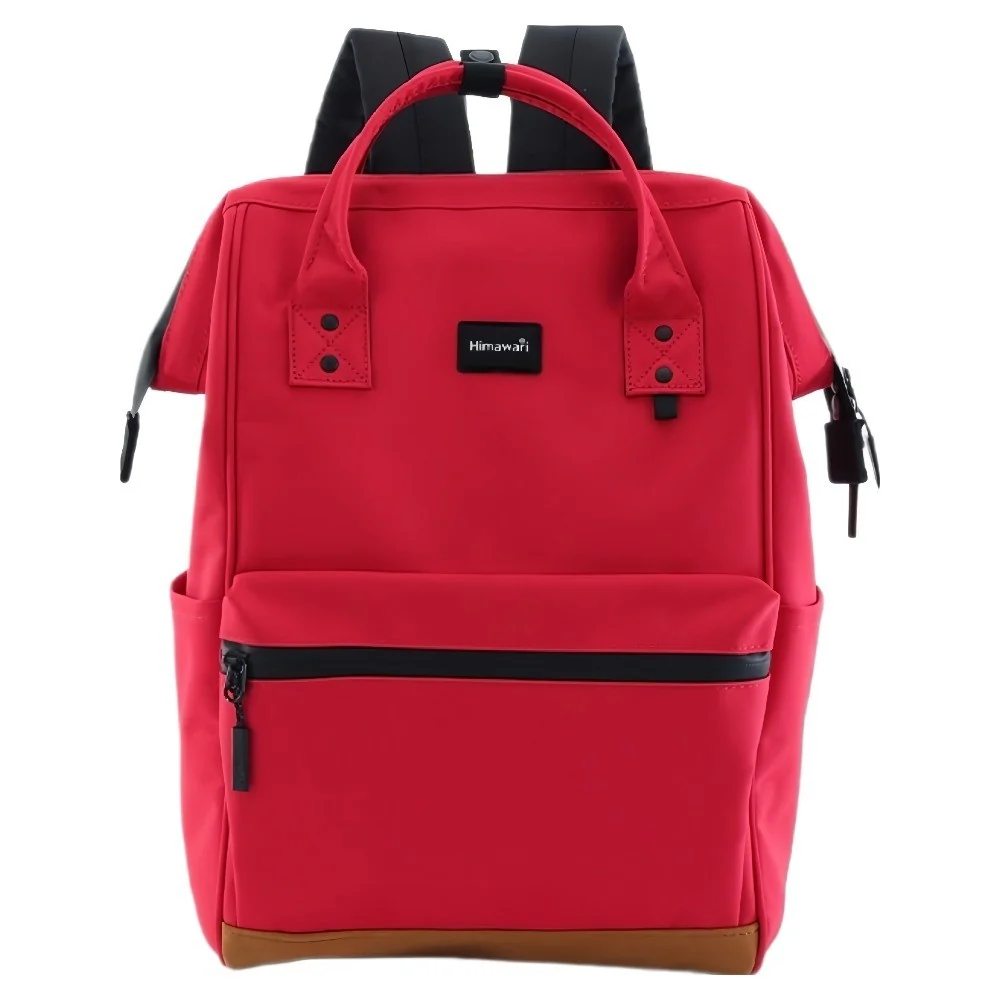

독서 노트에서 책의 문장과 내 생각을 나누는 두 칸
독서 노트를 다시 읽다가 좋은 문장을 발견했는데 책에서 옮긴 표현인지 자신이 정리한 생각인지 확신이 서지 않을 때가 있습니다. 읽는 동안에는 구분이 분명했어도 시간이 지나면 기억이 섞일 수 있습니다. 노트를 두 칸으로 나누어 한쪽에는 책에서 확인할 내용을, 다른 쪽에는 내 반응을 남겨봅니다. 모임에서 이야기할 때도 어느 문장을 다시 찾아야 하는지 알아보기 쉬워집니다.
두 칸의 이름은 자신이 구분할 수 있으면 됩니다. '책의 문장·내용'과 '내 생각'처럼 적을 수 있습니다. 왼쪽이 반드시 원문만 모으는 곳일 필요는 없지만 인용과 요약이 섞인다면 각각의 표시가 있어야 합니다. 기록의 위치를 나누는 것과 문장의 성격을 구분하는 것을 함께 해야 나중에 한 칸을 전부 인용으로 읽는 혼선을 줄일 수 있습니다.
첫 줄은 책을 다시 찾는 정보
기록을 시작할 때 책 제목과 저자를 적고 필요한 판본 정보를 남깁니다. 번역서를 읽는다면 사용한 책의 번역자도 확인할 수 있습니다. 같은 작품이라도 다른 판본을 가진 사람의 페이지와 일치한다고 생각하지 않습니다. 모임에서 함께 찾을 장면이 있다면 페이지뿐 아니라 장 제목처럼 확인할 위치를 더 적을 수 있습니다.
발행 정보는 실제 책에 적힌 만큼 확인합니다. 기억으로 출판사를 채우거나 다른 사람의 책 정보를 내 기록으로 옮길 필요는 없습니다. 같은 작품을 다시 읽으며 새 노트를 만들 때에는 현재 사용하는 책이 무엇인지 적어두세요. 이전 기록의 페이지를 그대로 쓰기보다 해당 문장이 어디에 있는지 다시 찾아보는 편이 분명합니다.
기록의 날짜는 책 정보와 다른 역할을 합니다. 책 정보가 읽은 자료를 찾게 해준다면 날짜는 그때의 생각을 구분합니다. 같은 문장을 여러 번 읽으며 반응이 바뀌었다면 읽은 날을 이어 적어볼 수 있습니다. 처음 기록을 지우고 가장 최근의 감상만 남기는 대신 어떤 질문이 새로 생겼는지 볼 자료로 두는 방법입니다.
인용과 요약에 각자의 표시
책의 표현을 그대로 옮길 때는 따옴표나 자신이 정한 표시로 인용 범위를 알아보게 합니다. 페이지나 장 제목을 옆에 적고, 필요한 부분만 골라 남깁니다. 나중에 기억으로 문장을 덧붙였다면 원문을 확인하기 전까지 그 추가 부분을 책의 표현으로 취급하지 않습니다. 옮긴 문장을 모임에서 사용할 계획이라면 실제 책에서 다시 읽어보세요.
내용을 자신의 말로 줄여 적는 경우에는 '요약'이라고 표시할 수 있습니다. 표현이 매끄럽게 정리되어 있어도 그것이 저자가 쓴 문장과 같다는 뜻은 아닙니다. 요약에는 어떤 대목을 정리했는지 위치를 남겨두면 됩니다. 책의 여러 부분을 연결해 썼다면 한 페이지에서 모두 찾을 수 있는 문장이라고 적지 않고 각 위치를 구분합니다.
문장을 정확히 옮겼는지 모르겠다면 확인할 표시를 남깁니다. 모임이 가까워졌다고 기억나는 말로 채워 인용처럼 만들지 않습니다. 책에서 찾지 못한 경우에는 자신의 기억이나 요약으로 소개할 수 있지만 상태를 분명히 말해야 합니다. 기록의 빈칸은 아직 찾지 못한 부분을 알려주는 역할로 남길 수 있습니다.
모임에 가져갈 기록을 고른 뒤 Himawari No.124 제품 정보처럼 외출 가방의 자료를 살펴볼 수 있습니다. 이 날은 책과 노트 중 어느 것을 먼저 펼칠지 정하고 해당 위치를 표시해두는 편이 도움이 됩니다. 원문을 확인할 책과 이야기할 메모가 짝을 이루면 모임 자리에서 여러 종이를 뒤집어 찾는 일이 줄어듭니다.

내 반응은 책의 내용 옆에서
옆 칸에는 문장을 읽고 떠오른 질문이나 개인 경험을 적습니다. 책 속 사건을 설명하다 자신의 경험으로 넘어갔다면 그 연결을 알아볼 수 있게 씁니다. '여기서 내 경험을 떠올림'처럼 표시하거나 문단을 나누어도 됩니다. 자신의 기억을 책에 적힌 사실처럼 옮기지 않도록 두 칸의 역할을 유지합니다.
가상의 독서 메모로 '인물은 왜 이 선택을 했을까'라는 질문을 적었다면 다음 독서에서 그 답을 찾을 수 있는지 살펴볼 수 있습니다. 답을 찾지 못했다고 반드시 질문을 없앨 필요는 없습니다. 현재 생각과 근거를 새 날짜로 적고 책에서 확인한 부분과 자신의 해석을 나누어둡니다. 다른 독자는 같은 대목에서 다른 질문을 꺼낼 수 있습니다.
감상이 바뀌었을 때에는 무엇이 바뀌었는지 남깁니다. 처음에는 동의했지만 뒤의 내용을 읽은 뒤 다르게 보였는지, 자신의 경험이 달라져 다른 부분에 눈이 갔는지 설명할 수 있습니다. 이를 책의 뜻이 바뀌었다고 단정할 필요는 없습니다. 같은 문장에 대해 내가 남긴 두 기록을 나란히 볼 수 있게 하는 것입니다.
기록이 길어지면 모임에서 이야기할 항목을 몇 개만 고릅니다. 전체 노트를 읽으려 하지 않고 질문 하나와 연결되는 원문 위치를 찾아봅니다. 그 질문을 꺼내기 위해 필요한 배경을 짧게 정리할 수 있습니다. 개인 경험이 많이 적힌 항목은 다른 사람에게 어느 부분까지 전할지 생각하고, 공유하지 않을 기록은 개인 노트에 남겨둡니다.
함께 읽은 뒤에도 남겨둘 구분
모임에서 나온 의견을 적는다면 누가 말한 내용을 내가 어떻게 이해했는지 구분합니다. 직접 확인하지 않은 말을 정확한 인용처럼 적지 않고 필요한 경우 다시 묻습니다. 다른 사람의 해석을 책의 문장 칸에 옮기면 원문과 의견이 섞이므로 별도 자리에 기록하세요. 함께 읽은 대화도 자료를 찾는 정보와 반응으로 나누어 남길 수 있습니다.
노트를 사진으로 공유할 때는 선택한 두 칸에 무엇이 들어 있는지 다시 읽습니다. 사적인 경험이나 다른 참가자의 이야기가 같은 페이지에 있을 수 있습니다. 필요한 기록만 별도로 정리해 전하면 개인 노트 전체를 펼치지 않아도 대화가 이어집니다. 페이지를 공유했다는 사실과 기록 속 다른 사람의 이야기를 널리 전해도 된다는 판단을 한 일로 묶지 않습니다.
다음 독서 시간에는 책의 위치 표시와 질문을 먼저 봅니다. 원문을 다시 읽고 현재 반응을 옆 칸에 이어 적어보세요. 예전 생각을 억지로 유지할 필요도, 모두 새로 바꿀 필요도 없습니다. 책에서 확인한 표현은 찾을 정보와 함께 남고, 그 옆에는 읽은 날짜별로 다른 질문이 쌓일 수 있습니다.